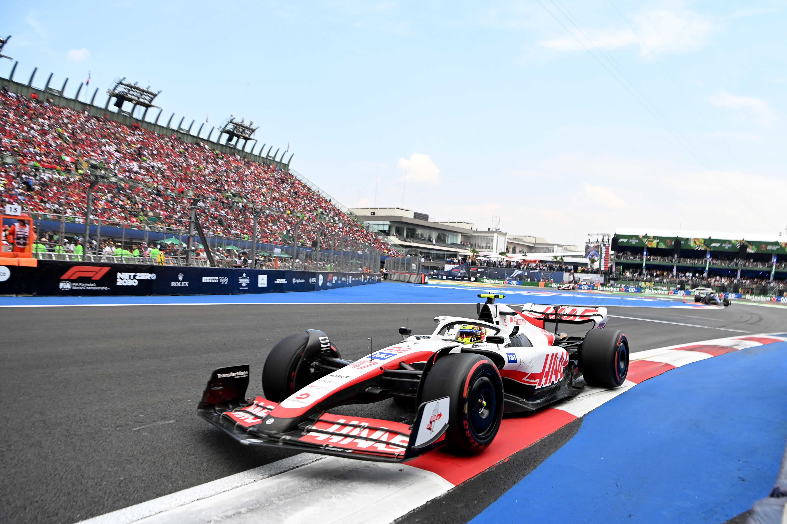

Over its 70 year history, F1 has pioneered numerous technologies and innovations that have positively contributed to society and helped to combat carbon emissions. From ground-breaking aerodynamics to improved brake designs, the progress led by F1 teams has benefitted millions of cars on the road today. Few people know that the current hybrid power unit is the most efficient in the world, delivering more power using less fuel, and hence CO2 , than any other road car. We believe that F1 can continue to be a pioneer for the auto industry, working with the energy and automotive sectors to deliver the worlds first net-zero carbon power unit, driving down carbon emissions across the globe. In launching F1s first-ever sustainability strategy, with an ambitious target to be a net zero carbon sport by 2030, we recognise the critical role that all organisations must play in tackling this global issue. Leveraging the immense talent, passion and drive for innovation held by all members of the F1 community, we hope to make a significant positive impact on the environment and communities in which we operate.
The reigning champions

The under dogs
The Greatest of all time
Formula 1 twitter feed.
F1 sustainability by 2030:
- Net zero carbon powered race cars
- Ultra efficient & low/zero carbon logistics & travel
- 100% renewably powered offices, facilities and factories
- Credible offsets and breakthrough C02 sequestration programs